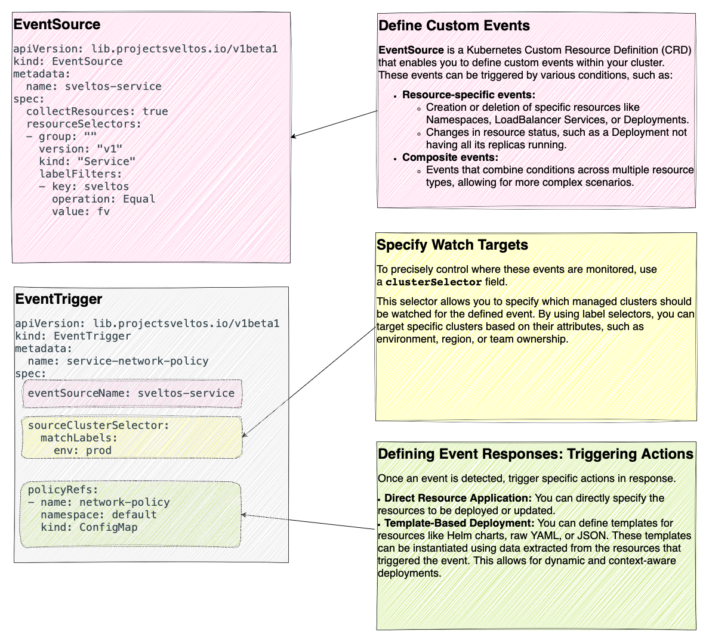
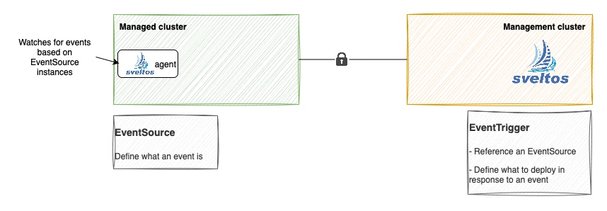

Addon Event Deployment
Introduction to Sveltos Event Framework
Sveltos supports an event-driven workflow:
- Define what an event is;
- Select the clusters to watch for such events;
- Define the event trigger: which add-ons/applications to deploy when the events occur
By default, add-ons/applications are deployed in the same cluster where the events are detected. However, Sveltos also supports cross-clusters:
- If an event happens in the cluster foo
- Deploy the add-ons in the cluster bar
For more information, take a peek at this link.

EventSource
An Event is a specific operation in the context of Kubernetes objects. To define an event, use the EventSource Custom Resource Definition (CRD).
Example: Create/Delete Service Event
In the above YAML definition, an EventSource instance defines an event as a creation/deletion of a Service with the label set to sveltos: fv.
Example: Create/Delete Service Event using Lua
Sveltos supports custom events written in the Lua language.
---
apiVersion: lib.projectsveltos.io/v1beta1
kind: EventSource
metadata:
name: sveltos-service
spec:
collectResources: true
resourceSelectors:
- group: ""
version: "v1"
kind: "Service"
evaluate: |
function evaluate()
hs = {}
hs.matching = false
hs.message = ""
if obj.metadata.labels ~= nil then
for key, value in pairs(obj.metadata.labels) do
if key == "sveltos" then
if value == "fv" then
hs.matching = true
end
end
end
end
return hs
end
In the above YAML definition, an EventSource instance defines an event as a creation/deletion of a Service with the label set to sveltos: fv using a Lua script.
When providing Sveltos with a Lua script, Sveltos expects the below format:
- It must contain a function
function evaluate(). This is the function that is directly invoked and passed a Kubernetes resource (inside the functionobjrepresents the passed in Kubernetes resource). Any field of the obj can be accessed, for instance obj.metadata.labels to access labels; - It must return a Lua table with the below fields:
matching: it is a bool indicating whether the resource matches the EventSource instance;message: it is a string that can be set and Sveltos will print the value, if set.
Before applying the Lua Event based definition, it is advisable to validate the script beforehand. Simply clone the sveltos-agent repository. Afterwards, in the pkg/evaluation/events directory, create a directory for your resource. If the directory already exists, create a subdirectory.
In the newly created directory or subdirectory, create the below.
- A file named
eventsource.yamlcontaining the EventSource instance with Lua script; - A file named
matching.yamlcontaining a Kubernetes resource supposed to be a match for the Lua script created in #1 (this is optional); - A file named
non-matching.yamlcontaining a Kubernetes resource supposed to not be a match for the Lua script created in #1 (this is optional); - Run make test
Lua and AggregatedSelection field
The above steps will load the Lua script, pass it the matching (if available) and non-matching (if available) resources and verify result (hs.matching set to true for matching resource, hs.matching set to false for the non matching resource).
Resources of different kinds can be examined together. The AggregatedSelection is an optional field and can be used to specify a Lua function that will be used to further select a subset of the resources that have already been selected using the ResourceSelector field. The function will receive the array of resources selected by the ResourceSelectors and can be used as a way to perform more complex filtering or selection operations on the resources, looking at all of them together.
The Lua function must return a struct with:
resourcesfield: slice of matching resorces;messagefield: (optional) message.
---
apiVersion: lib.projectsveltos.io/v1beta1
kind: EventSource
metadata:
name: sveltos-service
spec:
collectResources: true
resourceSelectors:
- group: "apps"
version: "v1"
kind: "Deployment"
- kind: HorizontalPodAutoscaler
group: "autoscaling"
version: v2
aggregatedSelection: |
function getKey(namespace, name)
return namespace .. ":" .. name
end
function evaluate()
local hs = {}
hs.message = ""
local deployments = {}
local autoscalers = {}
local deploymentsWithNoAutoscaler = {}
for _, resource in ipairs(resources) do
local kind = resource.kind
if kind == "Deployment" then
key = getKey(resource.metadata.namespace, resource.metadata.name)
deployments[key] = true
elseif kind == "HorizontalPodAutoscaler" then
table.insert(autoscalers, resource)
end
end
-- Check for each horizontalPodAutoscaler if there is a matching Deployment
for _,hpa in ipairs(autoscalers) do
key = getKey(hpa.metadata.namespace, hpa.spec.scaleTargetRef.name)
if hpa.spec.scaleTargetRef.kind == "Deployment" then
if not deployments[key] then
table.insert(unusedAutoscalers, hpa)
end
end
end
if #unusedAutoscalers > 0 then
hs.resources = unusedAutoscalers
end
return hs
end
Example: Create/Delete Service Event using CEL
Sveltos supports custom events written in the CEL language.
---
apiVersion: lib.projectsveltos.io/v1beta1
kind: EventSource
metadata:
name: sveltos-service
spec:
collectResources: true
resourceSelectors:
- group: ""
version: "v1"
kind: "Service"
evaluateCEL:
- name: service_with_label_sveltos_fv
rule: has(resource.metadata.labels) && has(resource.metadata.labels.sveltos) && resource.metadata.labels.sveltos == "fv"
In the above YAML definition, an EventSource instance defines an event as a creation/deletion of a Service with the label set to sveltos: fv but with a CEL definition.
Multiple rules can be defined. A resource is a match if it matches at least one rule.
---
apiVersion: lib.projectsveltos.io/v1beta1
kind: EventSource
metadata:
name: sveltos-service
spec:
collectResources: true
resourceSelectors:
- group: ""
version: "v1"
kind: "Service"
evaluateCEL:
- name: service_with_label_sveltos_fv # Rule 1: Service has label sveltos: fv
rule: has(resource.metadata.labels) && has(resource.metadata.labels.sveltos) && resource.metadata.labels.sveltos == "fv"
- name: default_namespace_service # Rule 2: Service is in the 'default' namespace
rule: resource.metadata.namespace == "default"
- name: service_with_port_8080 # Rule 3: Service exposes port 8080
rule: >
has(resource.spec.ports) &&
resource.spec.ports.exists(p, p.port == 8080)
EventTrigger
EventTrigger is the CRD introduced to define what add-ons to deploy when an event happens.
Each EvenTrigger instance:
- References an EventSource (which defines what the event is);
- Has a sourceClusterSelector selecting one or more managed clusters; 1
- Contains a list of add-ons to deploy

The below EventTrigger references the EventSource sveltos-service defined previously. It references a ConfigMap that contains a NetworkPolicy expressed as a template.
---
apiVersion: lib.projectsveltos.io/v1beta1
kind: EventTrigger
metadata:
name: service-network-policy
spec:
sourceClusterSelector:
matchLabels:
env: fv
eventSourceName: sveltos-service
oneForEvent: true
policyRefs:
- name: network-policy
namespace: default
kind: ConfigMap
---
apiVersion: v1
kind: ConfigMap
metadata:
name: network-policy
namespace: default
annotations:
projectsveltos.io/instantiate: ok # this annotation is what tells Sveltos to instantiate this ConfigMap
data:
networkpolicy.yaml: |
kind: NetworkPolicy
apiVersion: networking.k8s.io/v1
metadata:
name: front-{{ .Resource.metadata.name }}
namespace: {{ .Resource.metadata.namespace }}
spec:
podSelector:
matchLabels:
{{ range $key, $value := .Resource.spec.selector }}
{{ $key }}: {{ $value }}
{{ end }}
ingress:
- from:
- podSelector:
matchLabels:
app: internal
ports:
{{ range $port := .Resource.spec.ports }}
- port: {{ $port.port }}
{{ end }}
The Resource in the above ConfigMap YAML definition refers to the specific Kubernetes resource within the managed cluster that generated the event (identified by the Service instance with the label sveltos:fv).
Additionally, the template can access information about the cluster where the event originated. To utilize the name of the managed cluster you can use {{ .Cluster.metadata.name }} in your template.
Anytime a Service with the label set to sveltos:fv is created in a managed cluster matching the sourceClusterSelector, a NetworkPolicy with an ingress definition is created.
For example, if the below Service is created in a managed cluster:
A NetworkPolicy instance is instantiated from the ConfigMap content, using the information from Service (labels and ports) and it is created in the managed cluster.
---
apiVersion: networking.k8s.io/v1
kind: NetworkPolicy
metadata:
annotations:
projectsveltos.io/hash: sha256:8e7e0a7848eef3f75aed25d1136631dd58bdb9761709a9c46153bb5d04d69e8b
creationTimestamp: "2023-03-14T16:01:44Z"
generation: 1
labels:
projectsveltos.io/reference-kind: ConfigMap
projectsveltos.io/reference-name: sveltos-evykjze69n3bz3gavzw4
projectsveltos.io/reference-namespace: projectsveltos
name: front-my-service
namespace: default
ownerReferences:
- apiVersion: config.projectsveltos.io/v1beta1
kind: ClusterProfile
name: sveltos-8ric1wghsf04cu8i1387
uid: ca908a7b-e9a7-457b-a077-81400b59902f
resourceVersion: "2312"
uid: 410e8da6-dddc-4c34-9045-8c3967119ae9
spec:
ingress:
- from:
- podSelector:
matchLabels:
app: internal
ports:
- port: 80
protocol: TCP
podSelector:
matchLabels:
app.kubernetes.io/name: MyApp
policyTypes:
- Ingress
status: {}

In a nutshell, the below flow is executed.
- The sveltos-agent in the managed cluster consumes the
EventSourceinstances and detects when an event happens; - When an event occurs, it is reported to management cluster (along with resources, since EventSource Spec.CollectResources is set to true) in the form of EventReport;
-
The event-manager pod running in the management cluster, consumes the EventReport and:
-
creates a new
ConfigMapin the projectsveltos namespace, whose content is derived fromConfigMaptheEventTriggerinstance references, and instantiated using information coming the resource in the managed cluster (Service instance with label sveltos:fv); -
creates a
ClusterProfile.
-
Note
The field EventSourceName can be expressed as template and dynamically generate them using cluster information. This allows for easier management and reduces redundancy. Any cluster field can be used, for instance: {{ .Cluster.metadata.name }}-{{ index .Cluster.metadata.labels "region" }}.
EventSource CollectResources Setting
The collectResources field in an EventSource (default: false) determines whether Kubernetes resources matching the EventSource should be collected and transmitted to the management cluster for template instantiation.
- When collectResources is true: templates can directly reference the Resource, which is a full representation of the matched Kubernetes resource (e.g., a Service with the label sveltos:fv) from the managed cluster.
- When collectResources is false: templates can access the MatchingResources, a corev1.ObjectReference providing essential metadata information about the matched resource (e.g., Service with the label sveltos:fv) without the complete resource details.
Based on the example above, the below EventReport instance can be found in the management cluster.
---
apiVersion: lib.projectsveltos.io/v1beta1
kind: EventReport
metadata:
creationTimestamp: "2023-03-14T15:55:23Z"
generation: 2
labels:
eventreport.projectsveltos.io/cluster-name: sveltos-management-workload
eventreport.projectsveltos.io/cluster-type: capi
projectsveltos.io/eventsource-name: sveltos-service
name: capi--sveltos-service--sveltos-management-workload
namespace: default
resourceVersion: "7151"
uid: 0b71c54c-7c0e-4478-b48e-0081e2432c58
spec:
clusterName: sveltos-management-workload
clusterNamespace: default
clusterType: Capi
eventSourceName: sveltos-service
matchingResources:
- apiVersion: v1
kind: Service
name: my-service
namespace: default
resources: eyJhcGlWZXJzaW9uIjoidjEiLCJraW5kIjoiU2VydmljZSIsIm1ldGFkYXRhIjp7ImFubm90YXRpb25zIjp7Imt1YmVjdGwua3ViZXJuZXRlcy5pby9sYXN0LWFwcGxpZWQtY29uZmlndXJhdGlvbiI6IntcImFwaVZlcnNpb25cIjpcInYxXCIsXCJraW5kXCI6XCJTZXJ2aWNlXCIsXCJtZXRhZGF0YVwiOntcImFubm90YXRpb25zXCI6e30sXCJsYWJlbHNcIjp7XCJzdmVsdG9zXCI6XCJmdlwifSxcIm5hbWVcIjpcIm15LXNlcnZpY2VcIixcIm5hbWVzcGFjZVwiOlwiZGVmYXVsdFwifSxcInNwZWNcIjp7XCJwb3J0c1wiOlt7XCJwb3J0XCI6ODAsXCJwcm90b2NvbFwiOlwiVENQXCIsXCJ0YXJnZXRQb3J0XCI6OTM3Nn1dLFwic2VsZWN0b3JcIjp7XCJhcHAua3ViZXJuZXRlcy5pby9uYW1lXCI6XCJNeUFwcFwifX19XG4ifSwiY3JlYXRpb25UaW1lc3RhbXAiOiIyMDIzLTAzLTE0VDE2OjAxOjE0WiIsImxhYmVscyI6eyJzdmVsdG9zIjoiZnYifSwibWFuYWdlZEZpZWxkcyI6W3siYXBpVmVyc2lvbiI6InYxIiwiZmllbGRzVHlwZSI6IkZpZWxkc1YxIiwiZmllbGRzVjEiOnsiZjptZXRhZGF0YSI6eyJmOmFubm90YXRpb25zIjp7Ii4iOnt9LCJmOmt1YmVjdGwua3ViZXJuZXRlcy5pby9sYXN0LWFwcGxpZWQtY29uZmlndXJhdGlvbiI6e319LCJmOmxhYmVscyI6eyIuIjp7fSwiZjpzdmVsdG9zIjp7fX19LCJmOnNwZWMiOnsiZjppbnRlcm5hbFRyYWZmaWNQb2xpY3kiOnt9LCJmOnBvcnRzIjp7Ii4iOnt9LCJrOntcInBvcnRcIjo4MCxcInByb3RvY29sXCI6XCJUQ1BcIn0iOnsiLiI6e30sImY6cG9ydCI6e30sImY6cHJvdG9jb2wiOnt9LCJmOnRhcmdldFBvcnQiOnt9fX0sImY6c2VsZWN0b3IiOnt9LCJmOnNlc3Npb25BZmZpbml0eSI6e30sImY6dHlwZSI6e319fSwibWFuYWdlciI6Imt1YmVjdGwtY2xpZW50LXNpZGUtYXBwbHkiLCJvcGVyYXRpb24iOiJVcGRhdGUiLCJ0aW1lIjoiMjAyMy0wMy0xNFQxNjowMToxNFoifV0sIm5hbWUiOiJteS1zZXJ2aWNlIiwibmFtZXNwYWNlIjoiZGVmYXVsdCIsInJlc291cmNlVmVyc2lvbiI6IjIyNTIiLCJ1aWQiOiIzNDg2ODE1Yi1kZjk1LTRhMzAtYjBjMi01MGFlOGEyNmI4ZWIifSwic3BlYyI6eyJjbHVzdGVySVAiOiIxMC4yMjUuMTY2LjExMyIsImNsdXN0ZXJJUHMiOlsiMTAuMjI1LjE2Ni4xMTMiXSwiaW50ZXJuYWxUcmFmZmljUG9saWN5IjoiQ2x1c3RlciIsImlwRmFtaWxpZXMiOlsiSVB2NCJdLCJpcEZhbWlseVBvbGljeSI6IlNpbmdsZVN0YWNrIiwicG9ydHMiOlt7InBvcnQiOjgwLCJwcm90b2NvbCI6IlRDUCIsInRhcmdldFBvcnQiOjkzNzZ9XSwic2VsZWN0b3IiOnsiYXBwLmt1YmVybmV0ZXMuaW8vbmFtZSI6Ik15QXBwIn0sInNlc3Npb25BZmZpbml0eSI6Ik5vbmUiLCJ0eXBlIjoiQ2x1c3RlcklQIn0sInN0YXR1cyI6eyJsb2FkQmFsYW5jZXIiOnt9fX0KLS0t
The resources is a base64 encoded representation of the Service.
EventTrigger OneForEvent setting
The EventTrigger OneForEvent (false by default) field indicates whether to create one ClusterProfile for a Kubernetes resource matching the referenced EventSource, or one for all resources.
In the above example, if we create another Service in the managed cluster with the label set to sveltos: fv
$ kubectl get services -A --selector=sveltos=fv
NAMESPACE NAME TYPE CLUSTER-IP EXTERNAL-IP PORT(S) AGE
default another-service ClusterIP 10.225.134.41 <none> 443/TCP 24m
default my-service ClusterIP 10.225.166.113 <none> 80/TCP 52m
two NetworkPolicies will be created, one per Service.
$ kubectl get networkpolicy -A
NAMESPACE NAME POD-SELECTOR AGE
default front-another-service app.kubernetes.io/name=MyApp-secure 8m40s
default front-my-service app.kubernetes.io/name=MyApp 8m40s
A possible example for OneForEvent false, is when the add-ons to deploy are not template. For instance if Kyverno needs to be deployed in any managed cluster where certain event happened.
---
apiVersion: lib.projectsveltos.io/v1beta1
kind: EventTrigger
metadata:
name: service-network-policy
spec:
sourceClusterSelector:
matchLabels:
env: fv
eventSourceName: <your eventSource name>
oneForEvent: false
helmCharts:
- repositoryURL: https://kyverno.github.io/kyverno/
repositoryName: kyverno
chartName: kyverno/kyverno
chartVersion: v3.3.3
releaseName: kyverno-latest
releaseNamespace: kyverno
helmChartAction: Install
Currently, it is not possible to change this field once set.
Cleanup
Note
Based on the example above, if a Service is deleted, the NetworkPolicy is removed automatically by Sveltos.
$ kubectl get services -A --selector=sveltos=fv
NAMESPACE NAME TYPE CLUSTER-IP EXTERNAL-IP PORT(S) AGE
default my-service ClusterIP 10.225.166.113 <none> 80/TCP 54m
$ kubectl get networkpolicy -A
NAMESPACE NAME POD-SELECTOR AGE
default front-my-service app.kubernetes.io/name=MyApp 10m40s
Events and Multi-tenancy
If the below label is set on the EventSource instance by the tenant admin, Sveltos will make sure tenant admin can define events only looking at resources it has been authorized to by platform admin.
Sveltos recommends using the below Kyverno ClusterPolicy, which will ensure adding the label defined to each EventSource during creation time.
---
apiVersion: kyverno.io/v1
kind: ClusterPolicy
metadata:
name: add-labels
annotations:
policies.kyverno.io/title: Add Labels
policies.kyverno.io/description: >-
Adds projectsveltos.io/admin-name label on each EventSource
created by tenant admin. It assumes each tenant admin is
represented in the management cluster by a ServiceAccount.
spec:
background: false
rules:
- exclude:
any:
- clusterRoles:
- cluster-admin
match:
all:
- resources:
kinds:
- EventSource
- EventTrigger
mutate:
patchStrategicMerge:
metadata:
labels:
+(projectsveltos.io/serviceaccount-name): '{{serviceAccountName}}'
+(projectsveltos.io/serviceaccount-namespace): '{{serviceAccountNamespace}}'
name: add-labels
validationFailureAction: enforce
-
EventTrigger can also reference a ClusterSet to select one or more managed clusters. ↩